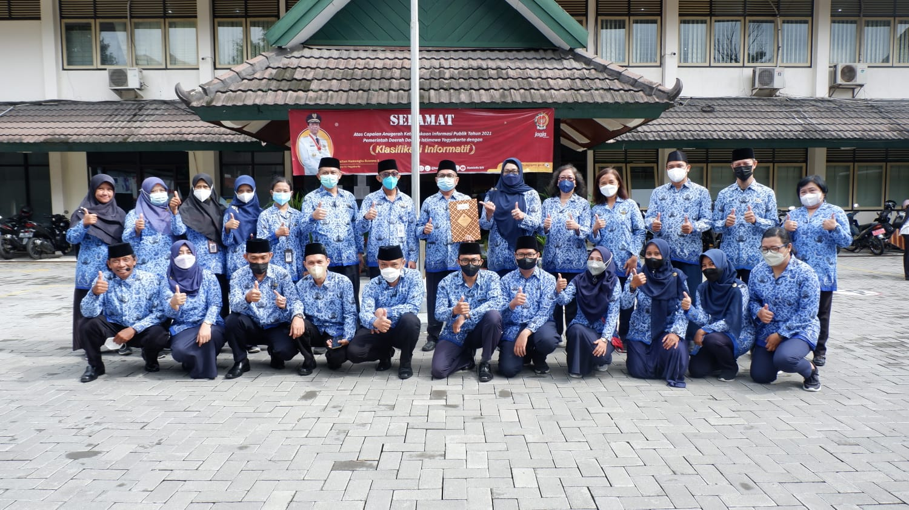
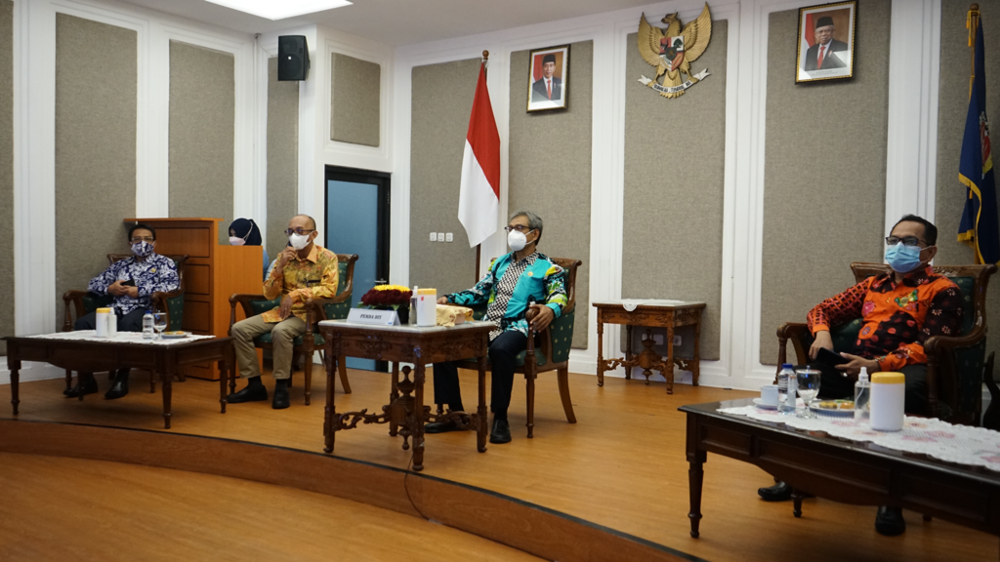

|
| Beranda | Profil | Program & Kegiatan | Informasi | Berita | Galeri | Layanan | Kontak |
Jogja Istimewa TV
Kontak
Alamat: Jl. Brigjen Katamso Komplek THR Yogyakarta Indonesia
Telepon:(0274) 373444
Fax:(0274) 374496
Email: diskominfo@jogjaprov.go.id
YOGYAKARTA TANGGAP COVID-19»» L I N K »» |
BERITA TERBARU
Dinas Komunikasi dan Informatika DIY Laksanakan Upacara Hari Pahlawan Tahun 2021Yogyakarta (10/11/2021), Sebagai tindak lanjut dari surat Sekretaris Daerah DIY, Nomor 003/21708 tanggal 2 November 2021 perihal Peringatan Hari Pahlawan Tahun 2021, Dinas Komunikasi dan Informatika DIY melaksanakan upacara pada hari Rabu tanggal 10 November 2021 untuk memperingati Hari Pahlawan. Upacara diikuti oleh seluruh Pejabat dan Staf baik ASN maupun Tenaga Bantu di lingkungan Diskominfo DIY. Upacara dilaksanakan di halaman kantor induk Dinas Komunikasi dan Informatika DIY, Jalan Brigjen Katamso Yogyakarta. Pemerintah Daerah DIY Pertahankan Kualifikasi Informatif pada Anugerah Keterbukaan Informasi Publik Tahun 2021 dari Komisi Informasi Pusat RIYogyakarta (27/10/2021) - Pemerintah Daerah DIY berhasil mempertahankan kualifikasi informatif pada Anugerah Keterbukaan Informasi Publik Tahun 2021 dari Komisi Informasi Pusat RI yang diadakan secara daring pada hari Selasa (26/10) di di Gedung IDMC, Komplek Kepatihan, Danurejan, Yogyakarta. Acara ini dihadiri oleh Asisten Sekda DIY Bidang Perekonomian dan Pembangunan dengan didampingi oleh Kepala Dinas Kominfo DIY, Kepala Bidang Informasi dan Komunikasi Publik dan Kepala Seksi Layanan Penyediaan Informasi Publik. |
SURVEI IKM Tweets |